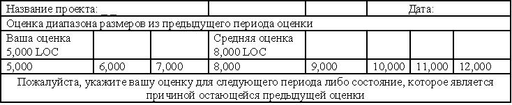

Метод оценивания Wideband Delphi
Еще одним популярным и простым методом, применяемым при оценке размера ПО и величины трудозатрат, является сбалансированный подход, разработанный группой Wideband Delphi. Техника Delphi изначально была разработана в Rand Corporation; само название позаимствовано из греческой мифологии (знаменитый Оракул в Дельфийском храме). Этот метод был успешно использован в корпорации Rand с целью прогнозирования развития большинства технологий в мире.
Этот метод основывается на использовании опыта многих экспертов с целью выполнения оценки, которая отражает всю сумму их знаний.
В среде разработчиков ПО исходный подход Delphi был модифицирован. "Чистый" подход используется при сборе изолированных мнений экспертов, обратной связи, в ходе реализации которой отсылаются анонимные итоговые результаты, а также при выполнении итераций до тех пор, пока не будет достигнут консенсус (без проведения групповых дискуссий).
Инструкции по достижению консенсуса согласно модели группы Wideband Delphi.
Поскольку реализация подхода Delphi требует очень больших затрат времени, разработанная концепция Wideband Delphi предназначалась для ускорения этого процесса. Улучшенный подход использует групповые дискуссии.
Шаги по достижению консенсуса согласно модели Wideband Delphi
1. Представление проблемы и ответной формы на рассмотрение экспертов.
2. Проведение групповой дискуссии.
3. Анонимный сбор мнений экспертов.
4. Обратная связь по сводке результатов с каждым экспертом.
5. Поддержка других групповых дискуссий.
6. Выполнение итераций (при необходимости) до тех пор, пока не будет достигнут консенсус.
Основное отличие между "чистым" методом Delphi и Wideband Delphi заключается в том, что в последнем случае проводятся групповые дискуссии. Сводка по результатам, достигнутым на шаге 4, представлена в таблице рис.16.13.

Рисунок 16.13 - Сводная форма результатов оценки размеров ПО по методу Delphi
Ниже представлен другой взгляд на процесс Wideband Delphi.
Опросите нескольких экспертов (обычно их число варьируется от трех до пяти).
Включите их опыт во все области "риска"- область приложения, язык программирования, алгоритмы, целевое аппаратное обеспечение, операционные системы и т.д.
Организуйте встречи с экспертами для обсуждения вопросов и объяснения деталей функционирования ПО. Подготовьте спецификации, другие исходные документы, структуру WBS и т.д. Позвольте им дополнить все это собственной информацией и вопросами. Пусть каждый из них сделает свои замечания.
Попросите каждого эксперта выполнить свою оценку, включающую минимальный, ожидаемый и максимальный рейтинг. Разрешите им оставаться независимыми и анонимными.
Запишите анонимные оценки в виде графа.
Встретьтесь с каждым экспертом и позвольте ему высказать в дискуссии мнение относительно его оценки, допущениях и причинах выполнения подобной оценки.
Найдите консенсус по поводу допущений. Это отразится на элементах действия, выполняемых с целью получения фактических данных.
Если возможно, выполните оценку достижения консенсуса.
- Если консенсус не был достигнут, прервитесь до тех пор, пока не сможете получить доступ к дополнительным данным; затем повторите.
- Прекратите повторение в случае, если достигнете консенсуса, либо на протяжении двух последовательных циклов не будет внесено больших изменений, а также не будет появляться значительный объем свободных дополнительных данных (с которыми можно будет согласиться либо нет). В итоге будет достигнут консенсус при оценке ожидаемого значения. Также при выполнении оценки должен учитываться максимальный и минимальный объем возможной конфиденциальности.
Преимущества модели Wideband Delphi
- простая и недорогая реализация на практике;
- экспертиза проводится несколькими специалистами в своей области;
- все участники обсуждения повышают свою квалификацию в области рассматриваемого ПО;
- не требуются хронологические данные, хотя они могут применяться в случае их доступности;
- используется на высшем уровне и при выполнении детализированной оценки;
- результаты будут более точными и менее "опасными", чем в случае использования оценки по методу LOC;
- обеспечивается поддержка глобальной точки зрения на проект со стороны членов команды.
Недостатки модели Wideband Delphi
- затруднительная повторяемость различными группами экспертов;
- существует вероятность достижения консенсуса для некорректной оценки. Поскольку вы "все выкупили", вы не сможете быть достаточно критичными в случае, если фактические данные будут выглядеть некорректными;
- вас может посетить ложное чувство самоуверенности;
- иногда вы не сможете достичь консенсуса;
- все эксперты могут работать в одном и том же направлении.